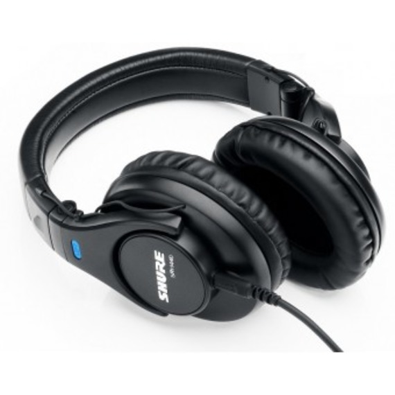

Audífonos
SRH440
Los auriculares de estudio profesional SRH440A ofrecen una respuesta de frecuencia detallada mejorada con audio preciso para podcasting, grabación casera y edición / mezcla crítica. La respuesta de sonido consistente y sin color proporciona una representación muy precisa del audio grabado, lo que lo hace ideal para capturar talento en un podcast o sesión de grabación. El mayor aislamiento, el cable recto incluido y los materiales de primera calidad también lo hacen ideal para el video.
